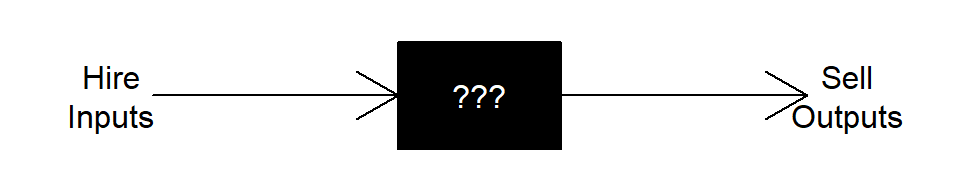

Firm Decisions
Components
- Production Technology
- Resource Constraints
- Input/Output Choices
Complications
- Time Horizon
- Short Run
- Long Run
- Sunk versus Fixed Costs
- Market Structure
- Price Taker
- Price Maker
- In-Between
- Transactions Costs
- Negotiation
- Monitoring
- Enforcement
Theory of the Firm
Firms suppress market transactions.
Why do they exist?
Classical/Neoclassical Approach “Black Box”
Transform inputs into outputs

Click here to see the code for the above figure.
par(mar = c(1, 1, 1, 1))
plot.new()
plot.window(xlim = c(0,1), ylim = c(0,0.1))
text(0.05, 0.05, "Hire\nInputs")
polygon(x = c(0.4, 0.6, 0.6, 0.4), y = c(0, 0, 0.1, 0.1), col = 'black')
arrows(x0 = 0.1, y0 = 0.05, x1 = 0.4, y1 = 0.05)
text(0.5, 0.05, "???", col = 'white')
arrows(x0 = 0.6, y0 = 0.05, x1 = 0.9, y1 = 0.05)
text(0.95, 0.05, "Sell\nOutputs")
Bureaucratic Hierarchy
Manage jointly-owned resources
“Nexus of Contracts”
Incentivize productivity and specialization within and between organizations
The Production Function
\[y = f(L,K),\text{ where}\] \[y\text{ is the amount of output the firm produces}\] \[L\text{ is the amount of labor the firm hires}\] \[K\text{ is the amount of capital the firm hires}\] \[f()\text{ describes the technology for transforming inputs (L and K) into output (y)}\]
Basic Properties
- Monotonic
- Diminishing Returns
(Similar properties to utility functions; transitivity is trivial in industries where physical output is cardinally measurable.)
Cobb-Douglas
Since production functions exhibit many of the same properties as utility functions, the Cobb-Douglas function is a common functional form for examples. In the context of production with labor and capital inputs, the Cobb-Douglass (production) function is:
\[ y = AL^{\alpha}K^{(1-\alpha)},\text{ where}\]
\[\alpha\text{ is labor's productivity share}\] \[A\text{ represents "total factor productivity," or the overall level of technology}\]
Other Examples
- Constant Elasticity of Substitution \[U(x) = (L^r + K^r)^{\frac{1}{r}},\text{ where}\]
\[s=\frac{1}{1-r} \text{ is the elasticity of substitution.}\]
- Polynomial (Short-Run Only?) \[y = aL^3 + bL^2 + cL,\text{ where}\] \[a<0\] \[b>0\] \[c>0\]
Graphical Representation
Use the persp(x, y, z) function in r to graph the
Cobb-Douglas production function for \(A =
100\), \(0 \le L \le 50\), \(0 \le K \le 50\), and \(\alpha = 1/3\).
x = seq(0, 10, 0.1)
y = seq(0, 10, 0.1)
z = outer(100*x^(1/3), y^(2/3))
persp(x,
y,
z,
xlab = "Labor",
ylab = "Capital",
zlab = "y = f(L,K)")Short-Run Production Function
In the short run at least one input is fixed (usually capital and/or land). In our two-input production function this makes output a function of only labor.
Graphically, this is like slicing a vertical cross-section of the production function at a specific level of the fixed input (capital).
Cobb-Douglas Production Function
Plot production as a function of labor for \(0 \le L \le 50\) and \(K = 25\).
curve(100*25^(2/3)*x^(1/3),
type = 'l',
xlim = c(0, 50),
xlab = "Labor",
ylab = "Capital"
)Polynomial Production Function
Define and graph an expression for the following short-run production function:
\[y = -L^3 + 60L^2 + 25L\]
polynomial <- function(x) {
-x^3 + 60*x^2 + 25*x
}
curve(polynomial,
type = 'l',
xlim = c(0, 50),
xlab = "Labor",
ylab = "Output"
)The marginal product of labor is the change in (i.e. slope, derivative of) the total production function with respect to \(L\).
The average product of labor is the amount (i.e. level) of output per-worker.
Marginal and Average Product Product of Labor
Marginal Product of Labor
The marginal product of labor is the rate of change in output for a given change in labor hired.
\[MP_L = \frac{df(L,K)}{dL}\]
Graphically, the marginal product is the slope of the production function, holding the level of capital fixed.
Average Product
\[AP_L = \frac{f(L,K)}{L}\]
Graphical Representation
Add curve() functions to the following code to graph the
marginal and average products of labor from \(0 \le L \le 50\) in a single plot area. Use
\((0, 1250)\) as the limits for the
vertical (output) axis and label your axes “Labor” and “Output.”
yac.polynomial <- ysym('-x^3 + 60 * x^2 + 25 * x')
dl.polynomial <-
deriv(yac.polynomial, 'x') # Take the derivative of f with respect to x
dl.polynomial <-
as_r(dl.polynomial) # Convert to an r expression
yl.polynomial <-
yac.polynomial / ysym('x') # Divide f by x
yl.polynomial <-
as_r(yl.polynomial) # Convert to an r expression
polynomial.mpl <- function(x) {
eval(dl.polynomial[[1]])
} # Define the mpl as a function.
polynomial.apl <- function(x) {
eval(yl.polynomial[[1]])
} # Define the apl as a function.
# Begin Graphing Code Below. yac.polynomial <- ysym('-x^3 + 60 * x^2 + 25 * x')
dl.polynomial <-
deriv(yac.polynomial, 'x') # Take the derivative of f with respect to x
dl.polynomial <-
as_r(dl.polynomial) # Convert to an r expression
yl.polynomial <-
yac.polynomial / ysym('x') # Divide f by x
yl.polynomial <-
as_r(yl.polynomial) # Convert to an r expression
polynomial.mpl <- function(x) {
eval(dl.polynomial[[1]])
} # Define the mpl as a function.
polynomial.apl <- function(x) {
eval(yl.polynomial[[1]])
} # Define the apl as a function.
# Begin Graphing Code Below.
curve(
polynomial.mpl,
type = 'l',
xlim = c(0, 50),
ylim = c(0, 1250),
xlab = "Labor",
ylab = "Output"
)
curve(polynomial.apl, add = TRUE)Production in the Long Run
Flexibility of input choices
Isoquants and their Properties
Based on the preference axioms introduced earlier, we can derive three properties for indifference curves.
- Isoquants farther from the origin represent greater output (monotonicity);
- Isoquants do not cross (transitivity);
- Isoquants slope downward (monotonicity + diminishing returns);
- Isoquants are bowed inward (convexity - a mix of inputs is usually more productive).
Graphically, an isoquant is a horizontal cross-section of the production function at a fixed level of output.
For the Cobb-Douglass example with \(\alpha = 1/3\) and \(A = 100\), plot the isoquants for \(y_1 = 1000\) and \(y_2 = 2500\) for \(0 \le L \le 50\) and \(0 \le K \le 50\).
# y.cobbDouglas <- ysym('100*L^0.25 * K^(1-0.25)')
# y.isoquant1 <- solve(y.cobbDouglas, 1000, 'K')
curve((1000 / (100*x^(1/3)))^(3/2),
type = 'l',
ylim = c(0, 50),
xlim = c(0, 50),
xlab = "Labor",
ylab = "Capital"
)
curve((2500 / (100*x^(1/3)))^(3/2), add = TRUE)Marginal Rate of Technical Substitution
The marginal rate of technical substitution between two inputs (e.g. labor and capital, \(MRTS_{LK}\)) is the ratio of the marginal productivities, \(\frac{MP_L}{MP_K}\). The MRTS tells us the firm’s ability (through the available production technology) to exchange capital for labor on the margin in such a way that the firm produces the same total amount of output. Hence, the MRS also represents the slope of the isoquant curve through any given values of \(L\) and \(K\).
Use the Simplify function from the Deriv
package to get \(MRTS_{LK} =
\frac{MP_L}{MP_K}\) for the previous exercise. Remember that
marginal utility results stored as yac_symbol objects, so
you need to convert them to strings before applying
Simplify, and then finally converting it back to a
ysym. Try using piping to keep it readable!
(Note:
Ryacas has a simplify function, but it just
doesn’t work as well for the functions we’re trying to simplify.)
y <- ysym('100 * L^(1/3) * K^(2/3)')
MRTS <- (deriv(y, 'L') / deriv(y, 'K')) |>
yac_str() |>
Simplify() |>
ysym()General Form
q <- ysym('A * L^(alpha) * K^(1-alpha)')
MRTSq <- (deriv(q, 'L') / deriv(q, 'K')) |>
yac_str() |>
Simplify() |>
ysym()\[\frac{\alpha K}{L \left( 1 - \alpha \right) }\]
Returns to Scale
Let’s see what happens when we scale up all of the inputs in the production function.
Evaluate the Cobb Douglas production function from our example for
\((L,K) = {(10,10), (20,20),
(30,30)}\). (Hint: create a new function of L and
K called f that converts the
yac_symbol y into an r expression
\[`yac_expr'\] and evaluates it
\[`eval`\].)
f <- function(L, K) {eval(yac_expr(y))}f <- function(L, K) {eval(yac_expr(y))}
f(10, 10)
f(20, 20)
f(30, 30)Constant Returns to Scale
A production technology has constant returns to scale whenever scaling up all inputs by the same proportion (e.g. double) increases output by the same proportion (e.g. double).
Examples of constant returns to scale production functions:
- Cobb-Douglas \(y = AL^{\alpha}K^{1-\alpha}\)
- Constant Elasticity of Substitution \(y = (aL^r + bK^r)^{1/r}\)
- Linear (Perfect Substitutes) \(y = aL + bK\)
- Perfect Complements (Linear Expansion Path) \(y = min\{aL, bK\}\)
Isoquants for a constant-returns technology are evenly spaced as the firm chooses to expand production.
Production functions with constant returns to scale correspond to constant long-run average costs.
Decreasing Returns to Scale
A production technology has decreasing returns to scale whenever scaling up all inputs by the same proportion (e.g. double) increases output by less than that proportion (e.g. less than double).
Production functions with decreasing returns to scale correspond to increasing long-run average costs (diseconomies of scale).
Increasing Returns to Scale
A production technology has increasing returns to scale whenever scaling up all inputs by the same proportion (e.g. double) increases output by more than that proportion (e.g. more than double).
Production functions with increasing returns to scale correspond to decreasing long-run average costs (economies of scale).